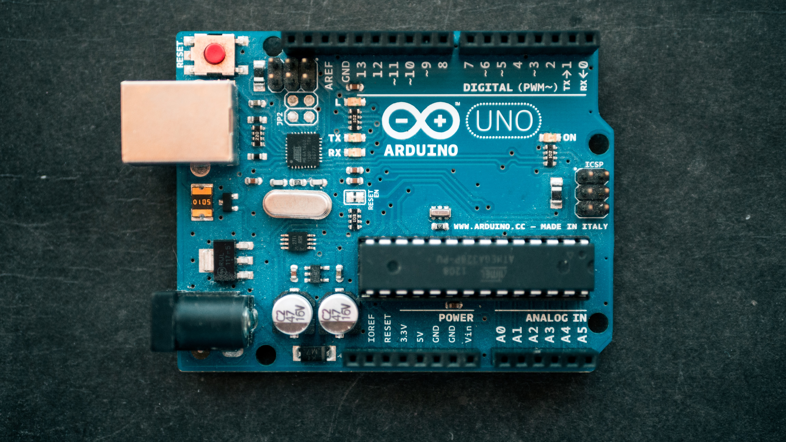

The Green Institute
Remote
Atypical High School Student trying to chase his dreams
Student at @atyraubilim. Aspiring software engineer. Passionate learner looking forward to acquire knowledge in top-tier companies. [CV]
1st place at Atyrau ”Arduino & Alexa Smart Home” Hackathon 2021 (among 15+ teams)
Bronze medal in Kazakhstan Bilim Olympiad in informatics 2019 (top 13/40 across Kazakhstan)
Golden medal in Kazakhstan Bilim Olympiad in informatics 2018 (top 2/40 across Kazakhstan)
3rd place at city olympiad in informatics 2018 (40+ participants)
2nd place at city olympiads in informatics 2019, 2020, 2021 (30+ participants)
